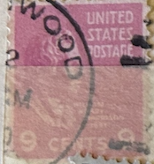
| SOURCE | TITLE| IMAGE MATCH | click to source page |
| HipStamp | 814 9 cent LOGO CANCEL William Henry Harrison Stamp used AVG | United States, General Issue Stamp / HipStamp | 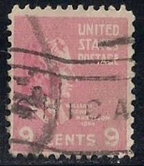 |
| Latinafy.com | United States Postage Thomas Jefferson 3 Cent 1946 | 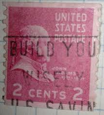 |
| HipStamp | 814 9 cent William Henry Harrison Stamp used VF | United States, General Issue Stamp / HipStamp | 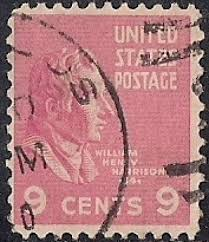 |
| Dreamstime.com | William Harrison Stamp Stock Photos - Free & Royalty-Free Stock Photos from Dreamstime | 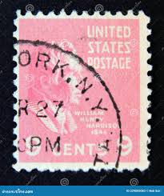 |
| eBay | Vintage Illinois Postcard POSTED 1952 linen PC F441 Fox River Bridge 2¢ stamp | eBay | 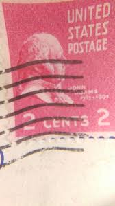 |
| Shutterstock | Usa Postage Stamp Circa 1938 9c Stock Photo 1240179268 | Shutterstock | 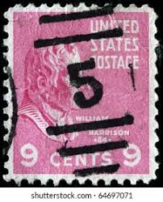 |
| OnlineStampShop | Scott #814 9c Presidential Issue William H. Harrison 1938 | 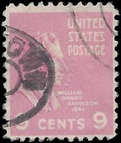 |
| Shutterstock | Cancellation Mark: Over 35,451 Royalty-Free Licensable Stock Photos | Shutterstock | 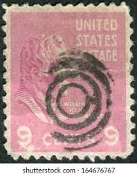 |
| Naval Cover Museum | BURDO APD 133 - NavalCoverMuseum | 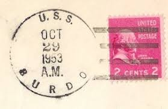 |
| eBay | U.S. 66 Through Tueras Canyon East Of Albuquerque NM Linen Postcard A1266084522 | eBay | 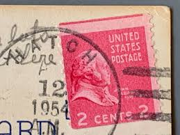 |
| masteringmetrics.com | Harrison And Sons Stamps President Benjamin Harrison - Postage Stamp - Our Family Tree The Harrison Family Address Stamp Set | 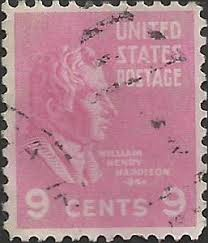 |
| eBay | #814 9 CENT PRESIDENTIAL SERIES FANCY CANCEL USED e | eBay | 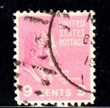 |
| Naval Cover Museum | DOUGLAS H FOX DD 779 - NavalCoverMuseum | 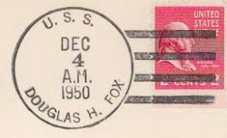 |
| eBay | 3 Cent Red Used US Back of Book Stamps for sale | eBay | 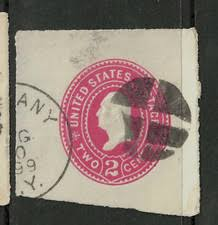 |
| eBay | 1938 set of 4, 9¢ William Henry Harrison postage stamps "Prexies", Good NH, #814 | eBay | 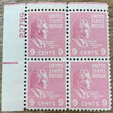 |
| Shutterstock | 191 Henry Harrison Royalty-Free Images, Stock Photos & Pictures | Shutterstock | 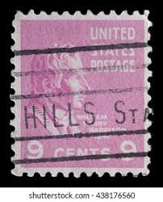 |
| eBay | BERKELEY CAL CALIFORNIA CA Cancel ~ Vertical Pair ~ SC 814 Harrison 9c USED | eBay | 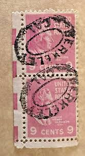 |
| eBay | ~ William Henry Harrison FOUR 9¢ Red Stamp ~ Posted/Used -01 | eBay | 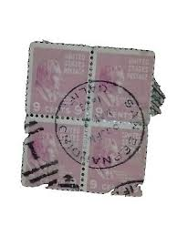 |
| eBay | US 814 9c HARRISON BLK 1943 RINCON ANNEX SAN FRANCISCO CALIF. HANDSTAMP H1638G | eBay | 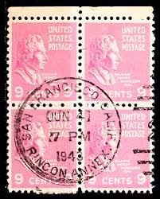 |
| Alamy | William Henry Harrison, 9th President of the United States. Born Febr. 9th, 1773, died April 4th, 1841 / by T. Campbell from the original by J.H. Beard ; printed by Klauprech & | 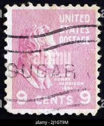 |
| eBay | USA - 1938 - Presidential Issue - William Henry Harrison - 9¢ - #3436 | eBay | 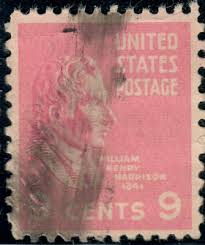 |
| eBay | Scott# ? US Stamp 1938 9c Willam Harrison Used Prexie -#4521 | eBay | 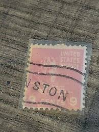 |
| eBay | U.S. Postage Stamp ~ John Quincy Adams ~ 2₵ Red ~ Posted ~ 1938 ~ C030 | eBay | 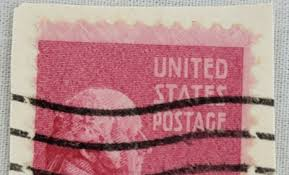 |
| Naval Cover Museum | UMPQUA ATO 25 - NavalCoverMuseum | 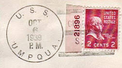 |
| Naval Cover Museum | GREGORY DD 802 - NavalCoverMuseum | 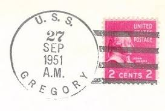 |
| eBay | US stamp, 1938-1939 Presidential Issue 2 cents (KBX) | eBay | 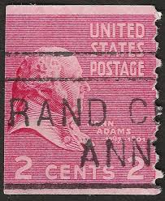 |
| Naval Cover Museum | SIBONEY CVE 112 - NavalCoverMuseum | 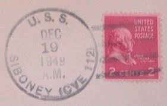 |
| Mystic Stamp Company | 814 - 1938 9c William Henry Harrison, Rose Pink - Mystic Stamp Company | 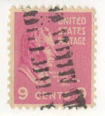 |
| eBay | US Plate Block Stamp Scott# 814 Harrison 1938 MNH (Durland) H305 | eBay | 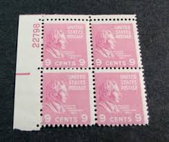 |
| eBay | Plate of 6 William Henry Harrison 9 cent postage stamps. Scott #814 | eBay | 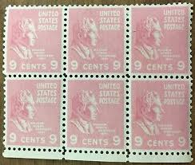 |
| ebid.net | USA, PEOPLE, William Henry Harrison, pink 1938, 9c on eBid United States | 187890364 | 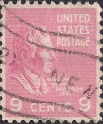 |
| North Carolina Postal History Society | PERQUIMANS COUNTY | 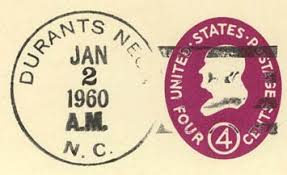 |
| Naval Cover Museum | WARRINGTON DD 843 - NavalCoverMuseum | 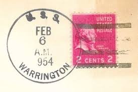 |
| eBay | US 1958 #U536a Red Violet 4c Franklin Die 2 Cut Square Used | eBay | 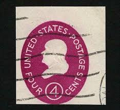 |
| eBay | USPS Scott U536 Benjamin Franklin Embossed Postal Envelope Stamp 1958 | eBay | 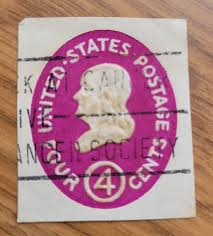 |
| eBay | US. 814. 9c. William Harrison. Single Pl# 23789 LL. MNH. 1938 | eBay | 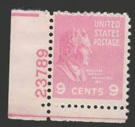 |
| Naval Cover Museum | BUSHNELL AS 15 - NavalCoverMuseum | 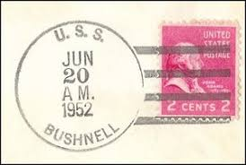 |
| eBay | 814 HARRISON PREXY PLATE BLOCK. EXTRA FINE 1. NEVER HINGED. VERY CHOICE! | eBay | 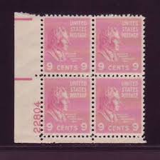 |
| Naval Cover Museum | COMSTOCK LSD 19 - NavalCoverMuseum | 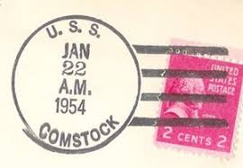 |
| eBay | U.S. Postage Stamp ~ William Henry Harrison ~ 9¢ Red Stamp ~ Posted/Used - 06 | eBay | 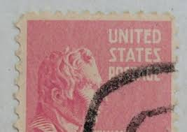 |
| Naval Cover Museum | INGERSOLL DD 652 - NavalCoverMuseum | 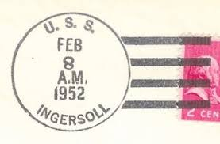 |
| Naval Cover Museum | PIEDMONT AD 17 - NavalCoverMuseum | 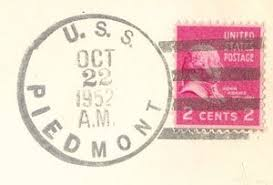 |
| Naval Cover Museum | OAK HILL LSD 7 - NavalCoverMuseum | 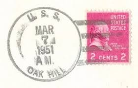 |
| Naval Cover Museum | ESTES LCC 12 - NavalCoverMuseum | 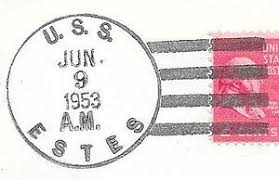 |
| eBay | Scott #814 William Henry Harrison Plate Block Of 4 Stamps - MNH P#23789 | eBay | 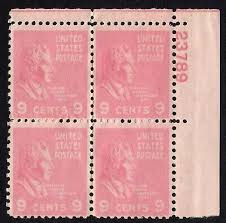 |
| Naval Cover Museum | DASHIELL DD 659 - NavalCoverMuseum | 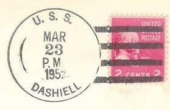 |
| eBay | MALACK 814 F/VF OG NH, Plate Block of 4, Nice! (sto..MORE.. pb1226 | eBay | 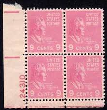 |
| Alamy | 1837 1841 hi-res stock photography and images - Alamy | 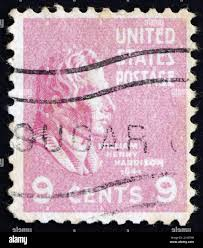 |
| Wikipedia | Twentysix, Kentucky - Wikipedia | 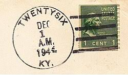 |
| eBay | US Scott # U536, 4c, Benjamin Franklin, Used, 1958 Cut Square (a25) | eBay | |
| eBay | STAMP US SCOTT 806 "John Adams" 2 CENT 1938 USED ON PAPER - B | eBay | |
| Naval Cover Museum | MEDUSA AR 1 - NavalCoverMuseum | |
| eBay | US Scott # U536, 4c, Benjamin Franklin, Used, 1958 Cut Square (a5) | eBay | |
| eBay | United States Postage Stamp ~ William Howard Taft ~ 50₵ Purple ~ Posted ~ c.1938 | eBay | |
| eBay | US Scott # U536, 4c, Benjamin Franklin, Used, 1958 Cut Square (a19) | eBay | |
| Naval Cover Museum | GENERAL WILLIAM MITCHELL AP 114 - NavalCoverMuseum | |
| eBay | United States Postage Stamp ~ John Quincy Adams ~ 2₵ Red ~ Posted ~ 1938 ~ B158 | eBay | |
| Naval Cover Museum | THUBAN AKA 19 - NavalCoverMuseum | |
| Naval Cover Museum | JOHN PAUL JONES DDG 32 - NavalCoverMuseum | |
| eBay | Red Numeral Cancellation United States Stamps for sale | eBay |